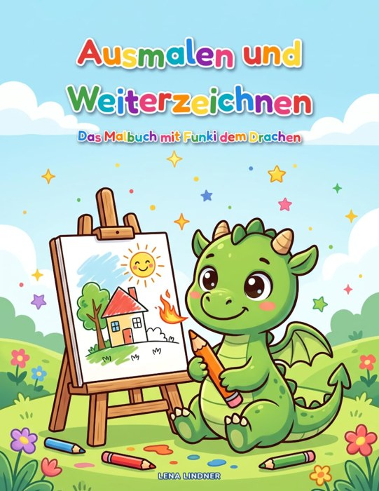

Lena Lindner
Das große Advents-Duell
Jeden Tag im Dezember treten Enkelkind und Oma oder Opa gegeneinander an – mit Quizfragen, Geheimschrift, Labyrinth-Rennen, Punktetabelle und Siegerurkunde.
Bei Amazon ansehenBücher zum Rätseln, Mitmachen und Loslegen – für Kinder, Familien und alle, die einfach anfangen wollen.
Alle Bücher gibt es als Taschenbuch bei Amazon – mit Leseprobe.
Lena Lindner
Jeden Tag im Dezember treten Enkelkind und Oma oder Opa gegeneinander an – mit Quizfragen, Geheimschrift, Labyrinth-Rennen, Punktetabelle und Siegerurkunde.
Bei Amazon ansehenLena Lindner
Ein Adventsabenteuer mit 24 Geschichten und Rätseln: Emil macht sich auf die Suche nach den verschwundenen Wunschzetteln – jeden Tag ein Stück weiter bis Heiligabend.
Bei Amazon ansehenLena Lindner
Über 100 Seiten Winterspaß mit Pinguin Pingo: Labyrinthe, Sudoku, Fehlerbilder, Bastelvorlagen, Rezepte, Experimente und Ausmalbilder.
Bei Amazon ansehenLena Lindner
Weihnachtsmann, Rudolf, Schneemann und Lebkuchenhaus: dicke Linien und große Flächen für kleine Maler – auf jeder Seite zeigt ein kleines Farbbild, wie das Motiv aussehen könnte.
Bei Amazon ansehen
Lena Lindner
Jedes Bild ist nur halb fertig – den Rest zeichnen Kinder selbst: 40 halbe Bilder zum Ausmalen, Weiterzeichnen und Erfinden, begleitet vom kleinen Drachen Funki.
Bei Amazon ansehenLena Lindner
Von der Tierärztin bis zum Astronauten: 60 Berufe zum Ausmalen, jeder mit einem kurzen, kindgerechten Satz, was man dort eigentlich macht.
Bei Amazon ansehen
Jan Hartmann
Schritt für Schritt und ohne Vorwissen: Wie ChatGPT, Gemini und Co. im Alltag helfen – mit 30 Prompt-Vorlagen und einem ganzen Kapitel zum Schutz vor Betrug.
Bei Amazon ansehenJan Hartmann
Vom ersten Gedanken bis zu den ersten Wochen im neuen Zuhause: Wohnformen vergleichen, Kosten und Fristen im Blick behalten, Erinnerungen bewahren – mit 22 Tabellen und sechs Arbeitsblättern.
Bei Amazon ansehenLena Lindner
Gemüse, Obst und Kräuter auf wenigen Quadratmetern – mit Pflanzplänen, Steckbriefen, Haltbar-Matrix und 26 Mini-Rezepten für kleine Mengen.
Bei Amazon ansehenLena Lindner
Struktur statt Zufall: Schritt für Schritt durch das erste Welpenjahr – ohne den Job aufzugeben.
Bei Amazon ansehenLena Lindner
Von Datingprofilen, großen Worten und plötzlicher Funkstille – das Buch für alle, die ihn auch schon mal getroffen haben.
Bei Amazon ansehenJan Hartmann
Er schreibt „Na, alles gut?“ und hat vorher sieben Minuten über ein Ausrufezeichen nachgedacht. Ein Mann öffnet die Tür zu seinem Kopf – zum Lachen, Wiedererkennen und Weiterreichen.
Bald erhältlichAuf TikTok blättern wir durch unsere Bücher, zeigen Seiten zum Mitraten und Ideen für Advent, Winter und Alltag. Auf Pinterest gibt es dazu Pinnwände voller Ideen.
Wir schreiben Bücher, die man nicht nur liest, sondern benutzt: zum Rätseln mit den Enkeln, zum Basteln an Schneetagen, zum Planen des ersten Balkonbeets oder für den ersten Chat mit einer KI.
Fragen oder Wünsche? Die Kontaktdaten stehen im Impressum.